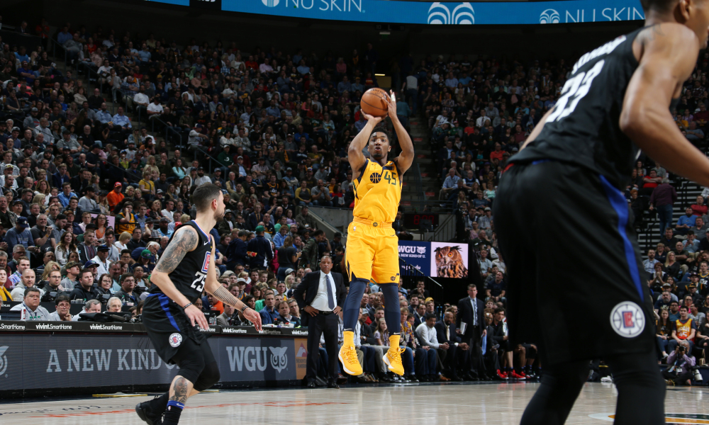

Game 1: Golden State Warriors vs Brooklyn Nets
My Pick:
Golden State Warriors
Why I'm Rolling with them:
The Warriors have looked dominant. On Friday's game against the Knicks, they were down 1 with 7:53 to go in the 4th. That turned into a 28 point blowout. Brooklyn has been playing good basketball, but they'd need a perfect game to take one from the Warriors, who take it 127-113
Game 2: Utah Jazz vs Dallas Mavericks
My Pick:
Utah Jazz
Why I'm Rolling with them:
This Jazz team played last night. But they also looked very good. Ingles had an off night, and they still managed to have 3 players score over 20. Even without Dennis Smith Jr, Dallas looked good in flashes against Toronto. I think they'll have a hard time against an elite rim protector like Gobert tonight. Jazz 108-99
 Donovan Mitchell has recovered from his early season slump, and is on a tearGame 3: Oklahoma City Thunder vs Phoenix Suns
My Pick:
Oklahoma City Thunder
Why I'm Rolling with them:
The Thunder have had a brutal start to their season. I'm expecting them to pick up their first win against a tired Phoenix team (Also: Deandre Ayton, 5 assists last night. Just saying). Paul George has been a bright spot for an otherwise dismal OKC offense, and he'll probably be tasked with guarding Ariza tonight. Ariza has been putting up about 10 points a game, so George can rest a little on the defeniseve end. The Suns don't have anyone to defend Westbrook on the perimeter, so he'll have a great game, giving OKC the victory 119-97
Game 4: Los Angeles Clippers vs Washington Wizards
My Pick:
Los Angeles Clippers
Why I'm Rolling with them:
Fool me twice, shame on me. Washington has looked awful to start the season, and I gave them the benefit of the doubt vs the Kings. No more. The Clippers have better perimeter defenders in Bradley and Beverly, so the Wizards backcourt will have their work cut out for them. Howard is still out. As much as there's a lot of questions regarding this Wizards team once he gets back, their lack of rebounding is a real issue. Gortat revenge game as the Clippers take it 112-103